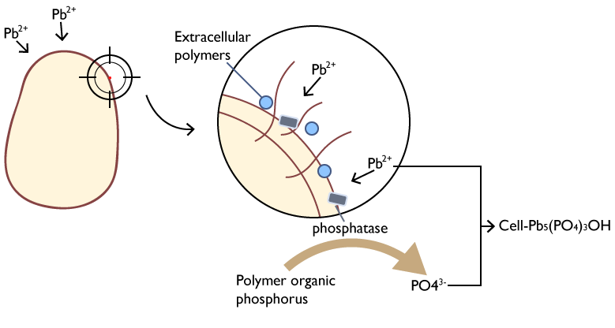

BACKGROUND
It is well established that lead is one of persistent toxic substances (PTS) and lead pollution is a typical type of heavy metal pollution in soil environment. The stable lead ions in soil can accumulate through crops, and finally enter human body, causing great impact on the ecosystem and human health.[1]

The Institute for Health Metrics and Evaluation (IHME) estimated that in 2017, lead exposure accounted for 1.06 million deaths and 24.4 million years of healthy life lost (disability-adjusted life years (DALYs)) worldwide due to long-term effects on health. IHME also estimated that in 2016, lead exposure accounted for 63.2% of the global burden of idiopathic developmental intellectual disability, 10.3% of the global burden of hypertensive heart disease, 5.6% of the global burden of the ischaemic heart disease and 6.2% of the global burden of stroke.[2]
CURRENT SITUATION
Up to now, no proper treatment methods have been developed for cultivated lands with moderate lead pollution, which are still playing a productive role. The crops produced in these lands will also pose a threat to people’s health and safety.
However, considering the cultivated lands that still give full play to its production performance, current methods such as the combination of physicochemical immobilization with phytoremediation and the microbial adsorption may still have some limitations. [3,4]
- Disturbance caused by physicochemical immobilization with foreign fixing agents to the original physicochemical property of soil environment.
- Physicochemical immobilization with foreign fixing agents can be a disturbance to the original physicochemical property of soil environment.
- Difficulty in ensuring the survival rate of microorganisms.
- Negative impacts brought by planting a large number of lead- enriched plants.
- Low efficiency due to the complicated distribution of heavy metal in soil environment

To improve limitations imposed by current methods, our team decided to consider this problem from a new perspective, hoping to add a new dimension to treatment of soil lead pollution.
OUR INSPIRATION
At this point, we were inspired by the research on lead immobilization. Lead in soil can form extremely stable pyromorphite [Pb5(PO4)3X (X = Cl, F, OH)] in the presence of enough soluble phosphate with a Kspof about 10-60 — 10-80. [5] It has passed the EPA standard of the United States, and it’s unable to extract effective lead through the TCLP method. Then we have a goal in mind, hoping that lead ions will eventually form such an extremely stable mineral.
Essential elements needed for our goal
Since the main component of the pyromorphite crystal is phosphate PO43-, and most of the phosphorus in the soil is in the form of insoluble, also the soil environment is very complex, heavy metals are relatively dispersed in the soil environment. So，in order to achieve our goal, we need two essential elements.
- a significant amount of soluble phosphate
- a certain way to accumulate the heavy metal lead relatively
The native phosphorus-solubilizing microorganisms in the soil and native earthworms provide us with great help. Soil phosphorus-soluble microorganisms can convert insoluble phosphorus from soil to soluble phosphorus by secreting phosphorus-soluble enzymes and organic acids.[6]
As an indigenous earthworm in the soil, earthworms have certain tolerance and enrichment ability to heavy metals. [7] Therefore, earthworms can provide us with a lot of help：
- Earthworms can live in the soil polluted by heavy metals and accumulate heavy metal ions in their bodies.
- The intestinal tract of earthworm can be a good culture medium for our selected engineering bacteria.[8]
OUR STRATEGY
Therefore, our project plans to use earthworms as a mobile carrier for heavy metal treatment, and use bacillus subtilis, the dominant symbiotic bacterium in the intestine, as an engineering bacterium to achieve the enrichment and fixation process of heavy metals. Earthworms can accumulate heavy metal lead ions in soil by intaking the soil, and we use the toehold switch based on the oxygen-regulated switch in dBacillus subtilis. As a result, the engineered bacteria can secrete phytase in the earthworms’ intestines, which has similar function with phosphatase, and release the phosphorus element in the soil eaten by earthworms together with organic acid, the metabolite of Bacillus subtilis itself, the soluble phosphate, lead ions and working together to form pyromorphite in the intestines of earthworms and complete the fixation of lead. Finally, the pyromorphite is discharged with earthworm intestinal excrement, and the engineered bacteria are discharged into the external aerobic environment. Under the joint action of oxygen limit switch and Toehold switch, the suicide module is opened to make the engineered bacteria commit suicide, thus guaranteeing the biosafety of our project.
In this year, due to the influence of COVID-19, we are unable to do our wet lab experiments. So we accomplish our proof and concept based on literature and we employ mathematical models to predict results and feasibility.